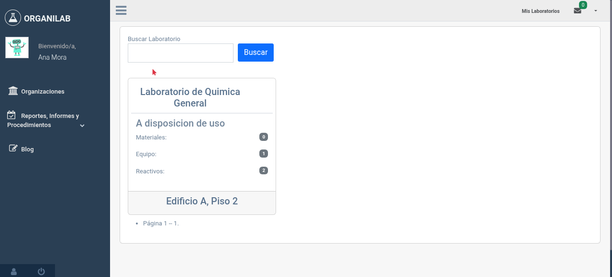

7. Escenarios Prácticos
A continuación, se presentan escenarios reales que una universidad distribuida geográficamente podría enfrentar al configurar Organilab. Cada escenario incluye la situación, la solución paso a paso y un diagrama explicativo.
Escenario 1: Crear la estructura de una universidad con 3 sedes
Situación
La Universidad Nacional de Costa Rica tiene una Sede Central en Heredia,
una Sede Regional en Chorotega (Guanacaste) y una Sede Regional en Brunca
(Pérez Zeledón). Cada sede tiene facultades con laboratorios. Necesitan
configurar Organilab para reflejar esta estructura.
Solución paso a paso
- Crear la organización raíz: "Universidad Nacional" como organización de nivel 0 (raíz). El administrador principal del sistema será quien la gestione.
- Crear las sedes como organizaciones hijas: Dentro de "Universidad Nacional", crear tres organizaciones de nivel 1: "Sede Central", "Sede Regional Chorotega", "Sede Regional Brunca".
- Crear las facultades/escuelas: Dentro de cada sede, crear las facultades como organizaciones de nivel 2. Ejemplo: "Sede Central" > "Facultad de Ciencias Exactas".
- Crear los laboratorios: Crear cada laboratorio y asignarlo a su facultad correspondiente. Ejemplo: "Lab. de Química Orgánica" en "Facultad de Ciencias Exactas".
- Asignar administradores por sede: Designar un administrador para cada sede que pueda gestionar sus propias facultades y laboratorios.
Escenario 2: Regente Químico con visibilidad en toda la sede
Situación
El Dr. Roberto Jiménez es el Regente Químico de la Sede Central. Necesita
poder ver las sustancias, etiquetas SGA y hojas de seguridad de todos
los laboratorios de la Sede Central (Facultad de Ciencias y Facultad
de Ingeniería), pero no debería poder modificar el inventario.
Solución paso a paso
- Crear el rol "Regente Químico" en la organización "Sede Central" con permisos de solo lectura: ver sustancias, ver etiquetas SGA, ver hojas MSDS, ver reportes.
- Asignar el rol a nivel de organización: En la pestaña "Por Organización", asignar el rol "Regente Químico" al Dr. Jiménez en la organización "Sede Central".
- Verificar: El Dr. Jiménez ahora puede ver las sustancias de todos los laboratorios de la Sede Central (Lab. Química, Lab. Bio, Lab. Materiales) gracias a la herencia de permisos.
Ventaja de este enfoque
Si en el futuro se crea un nuevo laboratorio en cualquier facultad de la Sede Central,
el Dr. Jiménez tendrá acceso automáticamente sin necesidad de configuración adicional.
Escenario 3: Técnico con acceso solo a su laboratorio
Situación
Ana Mora es técnica del Lab. de Bioquímica de la Facultad de Ciencias.
Solo debe tener acceso a ese laboratorio y poder gestionar el inventario
(agregar, modificar y mover sustancias y equipos).
Solución paso a paso
- Crear el rol "Técnico de Laboratorio" (si no existe) con permisos de gestión de inventario: agregar/cambiar/ver sustancias, equipos, materiales, gestionar muebles y estantes.
- Asignar el rol a nivel de laboratorio: En la pestaña "Por Laboratorio", seleccionar el "Lab. de Bioquímica" y asignar el rol "Técnico de Laboratorio" a Ana.
- Resultado: Ana solo verá y podrá gestionar el Lab. de Bioquímica. No tendrá acceso al Lab. de Química Orgánica ni a ningún otro laboratorio.
Nota importante
Si Ana necesitara acceso a otro laboratorio en el futuro, se le debería
asignar un rol adicional en ese laboratorio específico. Los permisos por
laboratorio no se propagan a otros labs.
Escenario 4: Docente con acceso temporal a otra sede
Situación
El Prof. Miguel Vargas es docente en la Sede Central y necesita usar
temporalmente el Lab. General de la Sede Chorotega para un proyecto de
investigación. Necesita poder consultar el inventario y hacer reservaciones,
pero no modificar nada.
Solución paso a paso
- Verificar que el rol "Docente" existe en la Sede Chorotega con permisos de consulta y reservaciones. Si no existe, copiar el rol desde la Sede Central.
- Agregar al Prof. Vargas a la Sede Chorotega como "Usuario de Laboratorio".
- Asignar el rol "Docente" por laboratorio: En la pestaña "Por Laboratorio", asignar el rol solo en el "Lab. General" de Chorotega.
- Cuando termine el proyecto: Desvincular al Prof. Vargas del Lab. General de Chorotega. Sus permisos en la Sede Central no se verán afectados.
Multi-organización
Un usuario puede pertenecer a múltiples organizaciones simultáneamente.
Los permisos se evalúan independientemente en cada contexto.
Escenario 5: Gestión de zonas de riesgo multi-laboratorio
Situación
La Facultad de Ciencias tiene una zona de almacenamiento de reactivos inflamables
que es compartida entre el Lab. de Química Orgánica y el Lab. de Bioquímica.
Se necesita crear una zona de riesgo que abarque ambos laboratorios y designar
a un responsable.
Solución paso a paso
- Crear la zona de riesgo "Almacenamiento de Inflamables" en la organización "Facultad de Ciencias".
- Asociar los laboratorios: Vincular tanto el "Lab. de Química Orgánica" como el "Lab. de Bioquímica" a esta zona de riesgo.
- Configurar tipo y prioridad: Establecer el tipo de zona y asignar la prioridad adecuada según la evaluación de riesgos.
- Asignar responsable: El responsable de seguridad debe tener el permiso "Cambiar zona de riesgo" a nivel de la Facultad de Ciencias para poder gestionar esta zona.
Escenario 6: Auditoría - ¿Quién tiene acceso a qué?
Situación
Durante una auditoría de cumplimiento ISO 17025, se solicita un reporte de
quién tiene acceso a cada laboratorio y con qué permisos. El auditor necesita
verificar que las responsabilidades y autoridades están bien definidas.
Solución paso a paso
- Acceder a la gestión de permisos de la organización que se está auditando.
- Revisar por laboratorio: En la pestaña "Por Laboratorio", seleccionar cada laboratorio para ver los usuarios y sus roles asignados.
- Revisar por organización: En la pestaña "Por Organización", verificar qué usuarios tienen permisos a nivel organizacional (estos tendrán acceso a todos los laboratorios).
- Consultar los roles: Listar los roles de la organización para verificar exactamente qué permisos incluye cada uno.
- Documentar: Los reportes generados desde Organilab pueden servir como evidencia para la auditoría.

Vista de usuarios con sus roles por laboratorio, útil para auditorías
Alineación con ISO 17025
Este proceso demuestra que la institución tiene un sistema claro y definido
de responsabilidades y autoridades, tal como lo requiere la norma.
Resumen de Buenas Prácticas
| Práctica | Descripción |
|---|---|
| Principio de mínimo privilegio | Asigne solo los permisos que cada persona necesita para su trabajo. No más. |
| Use roles, no permisos individuales | Agrupe permisos en roles descriptivos. Es más fácil de gestionar y auditar. |
| Permisos por lab para acceso específico | Use asignación por laboratorio cuando el usuario solo necesita acceso a un lab. |
| Permisos por org para supervisores | Use asignación por organización para quienes necesitan ver todos los labs. |
| Revise periódicamente | Audite los permisos regularmente. Revoque accesos que ya no sean necesarios. |
| Documente los roles | Use la descripción del rol para explicar su propósito. Facilita la auditoría. |